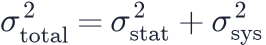
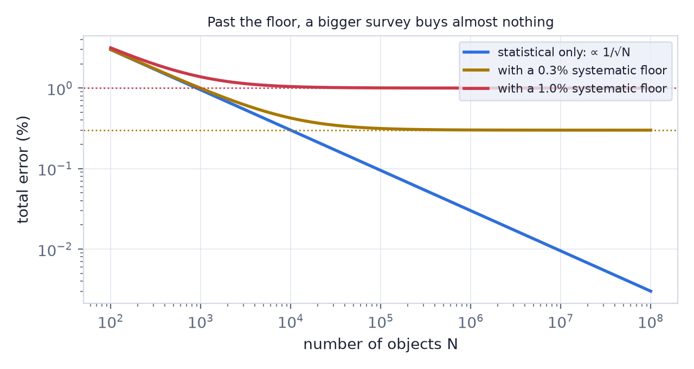
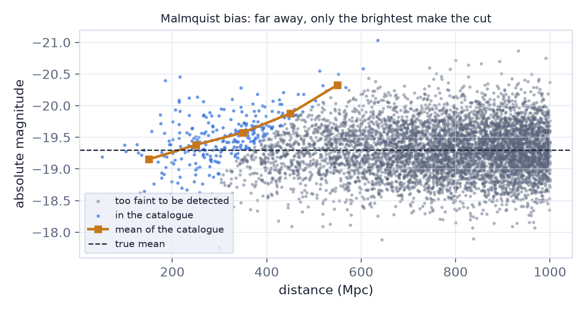

In this lesson you will learn
|
Two kinds of error
A statistical error comes from randomness: a finite number of
galaxies, photons or supernovae. Repeat the experiment and it scatters around the
truth; average  measurements and it falls as
measurements and it falls as  .
.
A systematic error comes from the method: a miscalibrated instrument, an incomplete model, a biased selection. Repeat the experiment and you get the same wrong answer every time. Averaging does nothing.
The floor Independent errors add in quadrature,  . As a survey grows the first term shrinks and the second does not, so the total error approaches a floor. A survey that is already there gains almost nothing from more data. |

Try it: Survey Designer Add a 0.3% systematic floor to the DESI programme. How many years of observing are still worth it? |
Where systematics hide
Every probe has its own list, and experienced analysts know it by heart.
The distance ladder. A parallax zero-point error shifts every Cepheid distance at once. In crowded distant galaxies a Cepheid can blend with its neighbours and look too bright. The brightness of Cepheids depends slightly on their metal content, which differs between galaxies. Each of these moves H0 without widening the error bar — lesson L7.3.
Type Ia supernovae. Different telescopes must be calibrated onto one photometric system to a hundredth of a magnitude. Dust in the host galaxy dims and reddens the light, and supernovae in massive galaxies are slightly brighter after standardisation (the "mass step"). If supernovae in the young universe differ from nearby ones, the whole Hubble diagram tilts.
Weak lensing. The signal is a shape distortion of about one percent, so the measurement of galaxy shapes must itself be calibrated to a fraction of a percent. Photometric redshifts that are slightly off put the lenses at the wrong distance. Galaxies that are intrinsically aligned by their surroundings mimic lensing, and gas blown out of galaxies by supernovae and black holes changes the matter distribution on small scales.
Galaxy surveys. Stars, dust and the varying depth of the imaging change how many targets are selected across the sky, painting false structure onto the map. Some redshifts fail; nearby fibres collide.
The CMB. Emission from dust and electrons in our own Galaxy lies in front of the signal and must be removed.
Selection effects: the sample lies
Some of the most treacherous systematics come from which objects end up in a catalogue. A survey that detects everything brighter than a limit sees the whole population nearby, but only the most luminous members far away. The distant objects in the catalogue are therefore brighter on average than the population they represent — Malmquist bias.

If you assume every standard candle has the population's mean brightness, the distant ones look closer than they are. Every distance-ladder and supernova analysis models this selection explicitly.
The defences
Nuisance parameters. A systematic you understand can be written into the model as an extra parameter — a calibration offset, an intrinsic-alignment amplitude, a photometric-redshift shift — with a prior from external data. The chain of lesson L7.3 then explores it along with the cosmology, and the error bars grow honestly.
Null tests. Split the data in ways that should not matter: north against south sky, early against late observations, red against blue galaxies. Each half must give the same answer. A null test that fails reveals a systematic long before it would show up in the final result.
Simulations. Build mock universes with a known answer, pass them through the full pipeline — selection, noise, instrument model — and check that the truth comes out. Inject fake signals into real data and see whether they are recovered.
Blinding. Scientists are human and stop looking for bugs once the answer "looks right". In a blinded analysis the true result is hidden — the data are shifted by an unknown amount, or the key numbers are encrypted — until every test has been passed and the method is frozen. DESI, DES, KiDS and others unblind only at the very end.
Cautionary tales In the 1970s two schools measured H0 as about 50 and about 100 km/s/Mpc, each with small error bars; the difference was systematic. In 2014 the BICEP2 team announced primordial gravitational waves in CMB polarisation; the signal turned out to be dust in our Galaxy. In 2011 the OPERA experiment reported neutrinos faster than light — a loose fibre-optic cable. Each result was statistically significant, and each was wrong. |
Settling a tension
When two measurements disagree, as in the Hubble tension (lesson L6.6), more data of the same kind cannot decide between "new physics" and "a hidden systematic": it would reproduce the same bias with smaller error bars. What helps is a different method with different systematics. JWST re-observed the Cepheids with sharper images to test crowding; other teams calibrate supernovae with red giant stars instead of Cepheids; gravitational-wave sirens and time delays of lensed quasars measure H0 without any distance ladder at all.
Try it: Distance Ladder Builder Add a parallax zero-point offset of +20 µas and 1000 Hubble-flow supernovae. Watch the error bar shrink while the shift stays. What independent check would reveal it? |
Remember this
|